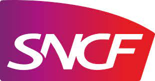

Épreuve E4 - BTS SIO
L'épreuve E4 du BTS SIO (Solutions Informatiques aux Organisations) évalue les compétences des étudiants dans la conception et la réalisation de solutions logicielles. Cette épreuve est essentielle pour valider les acquis techniques et professionnels.
Objectifs de l'épreuve :
- Analyser les besoins d'un client
- Concevoir une solution logicielle adaptée
- Réaliser et tester la solution
- Documenter le projet
Projets réalisés :
- Coiff'R - Gestion des rendez-vous pour un salon de coiffure
- GSB EXTRANET - Gestion des médecins pour le laboratoire GSB
Documents associés :
Stages réalisés :

e.SNCF Solutions
Technicien informatique · Stage
Mai 2024 - Juin 2024 · 2 mois
Lille, Hauts-de-France, France · Sur site
- 🖥️ Préparation de postes de travail : Installation et configuration de nouveaux équipements informatiques.
- 🔧 Support technique : Assistance aux utilisateurs pour résoudre les problèmes matériels et logiciels.
- 📦 Gestion des équipements : Suivi de l'inventaire des ressources informatiques.
- 📚 Formation des utilisateurs : Participation à la formation sur les nouveaux outils et logiciels.
Compétences validées :
- Gérer le patrimoine informatique :
- Recenser et identifier les ressources numériques.
- Exploiter des référentiels, normes et standards adoptés par le prestataire informatique.
- Mettre en place et vérifier les niveaux d’habilitation associés à un service.
- Vérifier les conditions de la continuité d’un service informatique.
- Gérer des sauvegardes.
- Vérifier le respect des règles d’utilisation des ressources numériques.
- Répondre aux incidents et aux demandes d’assistance et d’évolution :
- Collecter, suivre et orienter des demandes.
- Traiter des demandes concernant les services réseau et système, applicatifs.
- Mettre à disposition des utilisateurs un service informatique :
- Déployer un service.
- Accompagner les utilisateurs dans la mise en place d’un service.
Coiff'R
Développeur Full-Stack · Stage
Janvier 2025 - Février 2025 · 2 mois
Cuinchy, Hauts-de-France, France · Hybride
- 🎯 Mission principale : Conception, développement et maintenance d'un site de prise de rendez-vous interne pour un salon de coiffure.
- 💻 Technologies utilisées :
- Frontend & Backend : Next.js (React + Server-side rendering)
- UI Design : Tailwind CSS et ShadCN
- Base de données : MySQL
- 🚀 Responsabilités clés :
- Développement complet : Implémentation de fonctionnalités front-end et back-end (gestion des créneaux horaires, réservation des clients, tableau de bord pour les employés).
- Hébergement et maintenance : Déploiement sur une plateforme Cloud, avec une surveillance active pour garantir la disponibilité et la performance.
- Tests & Qualité : Mise en place de tests unitaires et fonctionnels pour assurer la fiabilité des fonctionnalités.
- Optimisation : Amélioration continue des performances et de l'expérience utilisateur.
- 🌐 Autonomie et expertise : Gestion de l’ensemble du cycle de vie du projet, depuis l’analyse des besoins jusqu’à la mise en production.
- 🔧 Points forts :
- Application intuitive et adaptée à un usage interne simplifié.
- Fiabilité et sécurité des données clients.
- Interfaces modernes qui reflètent l’image professionnelle du salon.
Compétences validées :
- Développer la présence en ligne de l’organisation :
- Participer à l’évolution d’un site Web exploitant les données de l’organisation.
- Référencer les services en ligne de l’organisation et mesurer leur visibilité.
- Participer à la valorisation de l’image de l’organisation sur les médias numériques en tenant compte du cadre juridique et des enjeux économiques.
- Travailler en mode projet :
- Analyser les objectifs et les modalités d’organisation d’un projet.
- Planifier les activités.
- Évaluer les indicateurs de suivi d’un projet et analyser les écarts.
- Mettre à disposition des utilisateurs un service informatique :
- Réaliser les tests d’intégration et d’acceptation d’un service.
- Déployer un service.
- Accompagner les utilisateurs dans la mise en place d’un service.
- Organiser son développement professionnel :
- Mettre en place son environnement d’apprentissage personnel.
- Mettre en œuvre des outils et stratégies de veille informationnelle.
- Gérer son identité professionnelle.